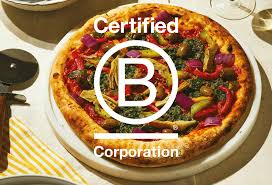

About us
Everything we do is Italian, of the highest quality, expertly-made, up-to-date,
delicious, distinctive and stylish. Always ready to impress.
Everything we do is Italian, of the highest quality, expertly-made, up-to-date,
delicious, distinctive and stylish. Always ready to impress.
We are Crosta Mollica - makers of Pizza Italiana and other superlativo Italian food.
Everything we do is Italian-made - of the highest quality expertly crafted, distinctive and stylish. It’s also why we’re known, and adored, by those with eccellente taste.
Are you ready to be let into the best-kept secret?
Welcome to Crosta Mollica world.

Some people make pizza. We make Pizza Italiana.
Our story began in the Italian countryside, when our founder experienced the effortless, unhurried joy that followed when Italian family sat down to enjoy a meal together - such special moment has inspired the pillars of Crosta Mollica.
Our range is always ready to impress and made for people of a different stripe.
So salute, Italy, and thanks for inviting the world to your table. Mangiamo.

Because we make pizza in Italia for those with eccellente taste.
People who appreciate the lengths we go to, the qualità we insist on, and the artistry of our signature leopard-spotted sourdough crust.
People like you.
Mangiamo.
Crosta Mollica is the the first UK-based Italian food brand to achieve the B-Corporation status.
The certification builds on Crosta Mollica’s values focusing on quality, authenticity and the passionate goal to bring Italian-made products to all household. Our mission is not only have a positive impact through good food, but also bring positive contributions to the planet as well.
Discover more

We’re proud to be the official partner of EMERGENCY UK, the British arm of a the most-cherished Italian charity that provides free, high-quality healthcare to victims of war, poverty and landmines, alongside building hospitals and training local medical staff. We've pledged to donate £250,000 to EMERGENCY by the end of 2025 and are well on our way to hitting the target.
Closer to home, we regularly supply City Harvest and Ace of Clubs, two incredible food-poverty charities, with our products and regular support to help those in need.
EMERGENCY UKOur mission at Crosta Mollica is to bring the best of authentic Italy to time poor foodies around the world.
This statement is our response to the UK Modern Slavery Act 2015 and outlines our position on workers’ rights and modern slavery. It applies to all parts of our business, and we encourage all our business partners and suppliers to uphold these principles and to adopt similar approaches within their businesses.
As well as ‘best in class’ Italian products, we aim to bring these products to our customers in a sustainable and responsible way, ensuring they are not just tasty but also protect our planet and people.
Read our statement

A circular economy, where nothing is wasted, is our target.
Right now, we have to balance this with food that’s safe and lasts long enough to be enjoyed and not wasted, which often involves the use of some plastics. 85% of all our packaging is recyclable at the moment, we are working hard to increase the sustainability of the packaging we use and make sure all our packaging is easily recyclable, giving clear guidance on how to dispose of the packaging on the back of our product’s pack.
As of 2025, Crosta Mollica is a Living Wage certified company demonstrating its commitment as a responsible employer to pay their directly employed staff a real Living Wage that meets the cost of living, with an ongoing commitment to annual updates. A Living Wage Accreditation is a formal recognition from the Living Wage Foundation.
Explore Living Wage Accreditationt